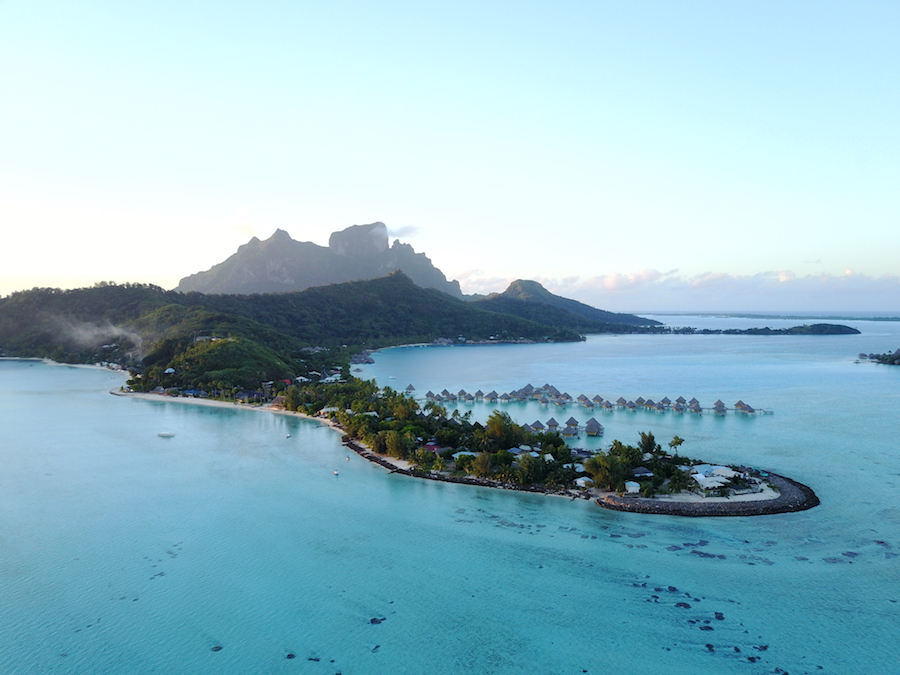
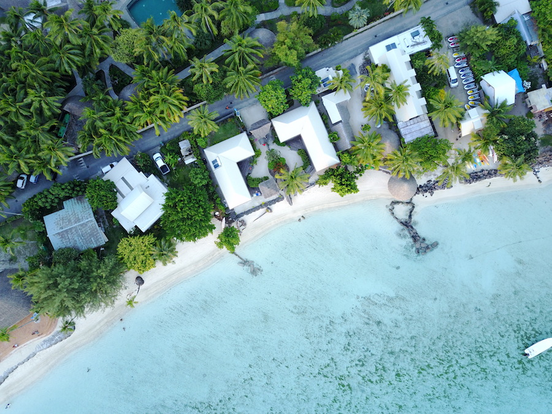

A Complete Guide To
Bora Bora
Where to stay, what to do and how to make the most out of your trip!
Bora Bora is a bucket list destination for so many. It's highlighted status all over Pinterest, Instagram and viral Facebook posts has brought it tons of fame over the last few years. The turquoise waters, beautiful lagoons and sharp peaks are what dreams are made of, but what do you really know about this beautiful island? Let this complete guide to Bora Bora start you off in the right direction.
Today's post will give you all the know how, including expectations, packing tips, accommodation advice, things to do, where to eat and even money saving tips! Your complete guide to Bora Bora awaits!
What To Expect
Visiting Bora Bora is taking a step towards pure paradise. The luxury that exists here is like none other, and is truly worth a visit. The island is part of the beautiful Society Islands in French Polynesia. With a unique landscape, interesting heritage and wonderful experiences, this high price destination has become increasingly more affordable.
Though location and expense could be a deterrent, in this complete Bora Bora travel guide, discover how to visit easily and make this dream destination not as expensive as you'd think.
Arriving in Bora Bora expect all your worries to float away. Turquoise waters, sherbet coloured sunsets, ridiculous luxury and gorgeous landscapes from every angle are almost guaranteed. Arriving in Bora Bora you'll be whisked off the airport island to either the main land, or to another motu to your resort.
The motu's (small islets) and reef protect the main island, creating a picture perfect lagoon. Away from locals, most tourists stay on resorts on the motu's, but whether you stay at a resort or a small 'pension', the views of the water don't spoil. Though there is an unfortunate distribution of wealth from the resorts. Despite this, the locals are friendly and there are some hidden gems to be found.
When To Go
Bora Bora sits between 26 - 31C, almost everyday, year round. December through til March is low season, bringing slightly cooler weather and higher chances of rain. June through October is high season, seeing higher temperatures and prices. Check the chart below for a full rundown on the temperature year round.
| Jan | Feb | Mar | Apr | May | June | July | Aug | Sept | Oct | Nov | Dec | |
|---|---|---|---|---|---|---|---|---|---|---|---|---|
| High | 28℃ | 29℃ | 29℃ | 28℃ | 28℃ | 27℃ | 26℃ | 26℃ | 27℃ | 27℃ | 28℃ | 28℃ |
| Low | 22℃ | 22℃ | 23℃ | 23℃ | 22℃ | 22℃ | 21℃ | 21℃ | 21℃ | 21℃ | 22℃ | 22℃ |
| Rainy Days | 14 | 13 | 11 | 10 | 10 | 7 | 7 | 6 | 7 | 8 | 9 | 13 |
What To Pack
Most of your time in Bora Bora will be surrounding the water and the sun. Swimsuits are of course a must, along with coverups, shorts, dresses and general warm weather gear. If you are planning on spending time on the main island, particularly on Sundays, it's a nice idea to dress a little more conservatively.
A few more essentials:
- A waterproof camera
- You'll likely be spending a lot of your trip in the beautiful crystal clear waters. Be sure to pickup a GoPro or similar to catch all the action shots, whether you're snorkelling, out on a jet ski or just hanging in the pool.
- Sunscreen
- A surprisingly expensive necessity to buy upon arrival in Bora Bora. Be sure to pick up some reef safe cream, as you'll be in the ocean a lot.
- A dry bag
- Having a dry bag is essential for Bora Bora. Not only will it keep your valuables safe on boat trip, but if there is a tropical downpour, your stuff will always be secure.
How To Get There
Getting to Bora Bora will require a transfer in French Polynesia's capital and largest city, Pape'ete on the island of Tahiti. Pape'ete International Airport is serviced by Air Tahiti Nui, Air France, Hawaiian Airlines, Aircalin, Air New Zealand and LATAM Chile.
Once in Pape'ete, Bora Bora is a quick 50 minute flight on Air Tahiti. If you are visiting multiple islands, definitely consider purchasing an Air Tahiti Air Pass. Many of these passes include Bora Bora on their itinerary and you'll save money buying a bulk ticket.
If you'd prefer to take a boat, there are only a few options and they are fairly hard to book as a tourist. If you're looking for comfort and ease, you'll want to fly.
How To Get Around
The main island of Bora Bora is only about 18 miles around, with one road circling. The island is not particularly walkable, with far distances between destinations and a lack of public transport. Within Vaitape or Matira, you can easily rent a car, scooter or bicycle, or try your hand at hitchhiking.
A car rental for the day will set you back approximately $100USD, or a week for $600USD. A bicycle is a great options, especially if you're looking to get a little exercise as distances are quite far. We rented a bike from Avis for approximately $20USD per day and circled the entire island, talking in the awesome views along the way. A scooter is another great option, coming in around $60USD, but be sure to have the correct license.
From the mainland to the motu's, you will be relying on your hotels water taxi's, a few of which are free but many cost quite a bit. If booking a meal in a restaurant on the mainland, many will send a shuttle boat for free, so be sure to take advantage. You can also rent a boat for the day or week, with or without a driver.
Where To Stay
Most visitors to Bora Bora opt to stay at one of the many resorts on the island, of which most are on the surrounding motu's. There are so many beautiful resorts dotted around the lagoon, and even a few gems on the mainland. A rule of thumb? Check out what the water taxi costs to and from the resort. Though many restaurants and activities offer pickups, if the water taxi is $50USD each way, you'll be looking at an expensive week.
When looking at location, keep in mind that all beaches except one lie on the motu's. If you are staying on the mainland and don't plan on renting a car, try and set up shop near Matira Beach. Restaurants, activities and a few small hotels dot this area. Up in the islands main town, Vaitape, you'll find super markets, shops and the main ferry to the airport.
Looking for a bargain? Luckily there are options but budget accommodation here still runs in the $60-$100USD range. For those prices you'll be staying on the main island, likely in either Vaitape or Matira. Matira is the popular choice, with beach access and a few nice restaurants. Keep in mind, here budget accommodation runs in the $60 to $100 range. Chez Robert et Tina is a nice option close to the water, or if you'd like to be in town, Sunset Hill Lodge is located north of Vaitape. For a real bargain, you can also camp on the island.
Midrange accommodation on Bora Bora will likely mean a resort stay, but skipping the overwater bungalow. You can find plenty of deals on Agoda or Booking.com. The Maitai and Oa Oa Lodge both come in around $300-400 a night, which is on the low end for the island.
If luxury if what you are after you of course have come to the right place. A complete Bora Bora travel guide needs to mention a few great over water bungalows! They are pricey, but for a lot of people, this is a once in a lifetime destination. Here's the best choices in Bora Bora:
On A Motu
- Le Meridien: Along with The St Regis and InterContinental Thalasso, Le Meridien is home to the iconic Bora Bora view. The resort also houses a sea turtle sanctuary and some of the best snorkelling in the area.
- The St. Regis: The St. Regis has some of the best culinary options out of all the resorts in the area and awesome amenities including a great spa. Many of the units have space for larger families or groups with multiple bedrooms.
- InterContinental Thalasso: One of the definite favourites, the InterContinetal Thalasso is often booked out, despite it's high price tag. The level of service and adjoining beach are definitely a highlight.
- Four Seasons Bora Bora: The Four Seasons is famous for some of the most luxurious hotels around the world and Bora Bora certainly does not disappoint. The beautiful thatched bungalows are well kept and home to all the things you could possible need, including private over-ocean pools.
- Conrad Bora Bora Nui: Located on the other side of the island, the Conrad is on Motu To'opua facing the sea instead of the lagoon. The bungalows are spacious and beautifully decorated offering pure luxury.
- Sofitel Bora Bora Private Island: Offering tons of privacy, the Sofitel private island is a great option for a smaller resort. Though slightly dated, the resort offers more personal touches than expected from a hotel chain.
- Pearl Beach Resort and Spa: Coming in at a slightly more modest price, the Pearl Beach resort is on the north west side of Bora Bora. The resort offers free transfers to and from the main island, an attractive option given many others charge $50USD plus each way.
Main Island
- InterContinental Le Moana: Located on Matira Beach, Le Moana won't offer as much privacy as other resorts, but the beach is beautiful. You'll have more ocean than land views and the price of the bungalows reflects this. A great option for seeing more of the main island.
- Sofitel Marara Beach Resort: The islands second Sofiitel is on the main island, just north east of Matira Beach. This is a fantastic option if you're interested in seeing more of the island and checking out local restaurants you might miss on the motu's.
Things To Do
Before visiting, we'd heard from numerous people that Bora Bora was boring, you'll be surrounded by honeymooners, there's no real culture and you'll be spending most of the time at the pool or beach. After visiting for a whole week, we discovered just how wrong they were. Yes, there aren't many backpackers, nor party spots, but there are certainly a lot of activities. They do come at a steep price though, so plan accordingly.
While you could easily spend a week gazing out at the lagoon, cocktail in hand working on your tan, there's lots more to this island. If you want a bit more excitement, here's a rundown on whats available.
- Lagoon Tour's: From glass bottom boats and snorkelling trips to catamaran sails and private sunset cruises, if you visit Bora Bora you've got to get out on the water. Most tours include either lunch or light snacks, stops at different points on the island and plenty of time in the sun.
- Kayaking and SUP: Looking to get some exercise in paradise? Borrow a SUP or kayak from your resort, or rent one at various shops on the island. Get some exercise and enjoy the water.
- Diving and Snorkelling: Bora Bora's lagoon is home to sharks, corals and tons beautiful fish. The snorkelling here is great, and the diving even better. Bora Bora is a great place to learn to dive as well, with it's calm and clear waters.
- Jet-ski: For the more adventurous, jet skis are available for rent on most beaches. The price can be high, but there's not much of a better way to see the lagoon.
- Other Water Activities: From helmet diving to underwater bicycling to 'JetBoard-ing', locals and hotels are constantly thinking of new ways to entertain tourists on the lagoon. Try out the classics like waterskiing and windsurfing or take it full board and try out a hover board made for the water.
- Hiking: The most popular hiking trail on Bora Bora is Mount Pahia. There are tours offered here and on other trails, but with the right precautions, you can also chose to do it on your own.
- Biking: Bora Bora is about 18 miles around the ring road, and beautiful from every angle. If you're in reasonable shape and leave early enough, biking the circle around the entire island is an awesome way to spend the day.
- Scenic Helicopter Ride: Up until recently (June 2017) Tahiti Helicopters operated scenic services on many of the islands. They are not operational at the moment, but when visiting Bora Bora we were told they would likely reopen soon. Be sure to check local websites.
- Beach Hopping: Beach hopping in Bora Bora is more like motu hopping, so will require a boat. If you're not into tours, you're in luck! There are a few companies that will lend you a boat (with or without captain) for the day to explore all the best beaches around.
- Luxurious Experiences: From spa's to private dining experiences, if the price is right, Bora Bora can offer pretty much anything for vacationers. Many of the resorts offer custom experiences for those who are looking for something really special.
What To Eat
Bora Bora has lots of wonderful restaurants to chose from, but unfortunately many of those lie at the higher end of the price scale. The few cafes and smaller restaurants can be hit or miss, often over changing for simple meals. In Vaitape, be sure to check out the food trucks and markets, or pop into one of the few super markets around and self cater.
If you are based in Matira, Matira Beach Club is a nice choice for dinners overlooking the water. They also offer free pickups from hotels on the mainland. Snack Matira is also a cheap option for a quick meal. Within the hotels in the area, the restaurants are great but can be very expensive for small portions.
If you are looking for swankier options, Bloody Mary's, La Villa Mahana and L'Elixir, along the road between Matira and Vaitape, offering some of the most exclusive dining spots on the island. Bloody Mary's has become quite touristy with it's “celebrity” status, but with free pickups from any resort on the island, it's worth experiencing.
Vegetarian Corner
Eating vegetarian in Bora Bora, much like the rest of French Polynesian came with it's challenges. The islands offer a lot of meat heavy dishes catered to tourists, and fish filled options for a more authentic meal. Most of the restaurants we ate at were willing to adapt a menu item to make it more vegetarian friendly, though a few times this translated to just less meat.
The best option for vegetarians? Self catering and picnics! The supermarkets on the island are very well stocked, though expensive, but offer delights not found on other islands in the region like tofu, veggie burgers and even vegan cheese. The baguettes are mostly vegan (though worth confirming), so grab some toppings and french wine and have a beach picnic!
Money Saving Tips
Though Bora Bora is a luxury destination, there are definitely ways to save money and make your trip more affordable, without sacrificing a great trip. A complete guide to Bora Bora wouldn't be complete without some ways to save cash!
- Camp: A few campsites have sprung up around the island, but be sure to check ahead of time. The current Bora Bora Lonely Planet lists a site that no longer exists. You can also inquire at a Pension if you can camp on their property for a lesser fee.
- Self Cater: Eating out in Bora Bora can be a fantastic experience, especially with so many 5 star hotels, but on the main island, you'll find a full grocery store catering to locals and tourists alike. Picnics are always an option if you don't have a kitchen in your rental.
- Enjoy The Beach: Many activities on Bora Bora will run you over $100USD for a morning of snorkelling, but luckily the beach is always free. If you're staying on the main island, Matira Beach is the best spot to hop in the water.
- Take Advantage Of Freebies: Many hotels and resorts will offer free non motorized water activities, such as kayaking or SUP. Take advantage and go on your own tour of the motu!
- Book A Package: Due to it's location and exclusivity, a package deal on Bora Bora could be your best bet. Look for options that include daily meals, drinks or activities.